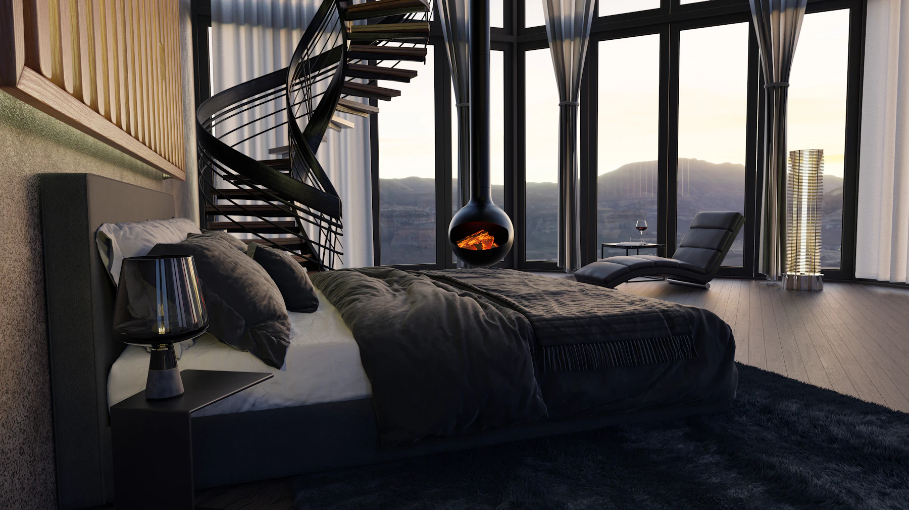
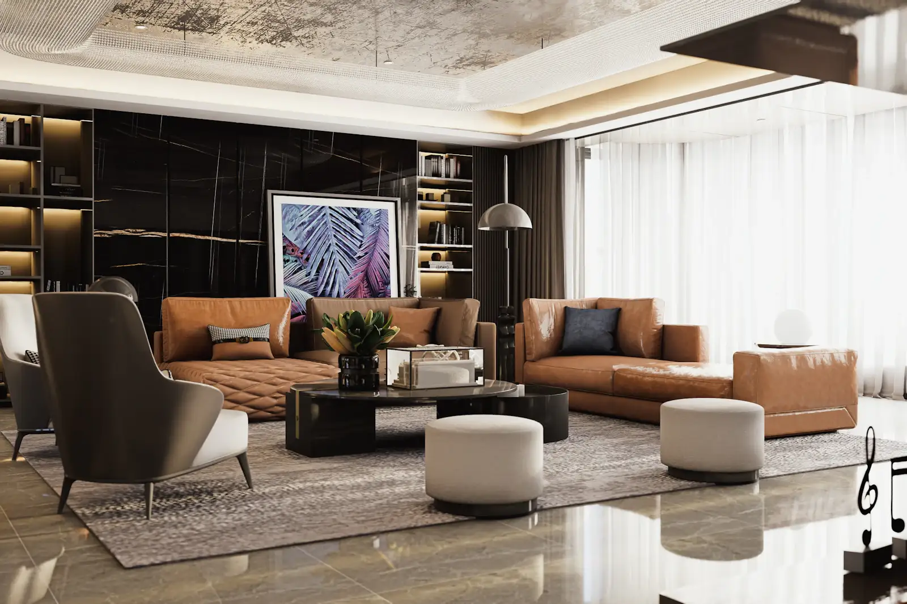
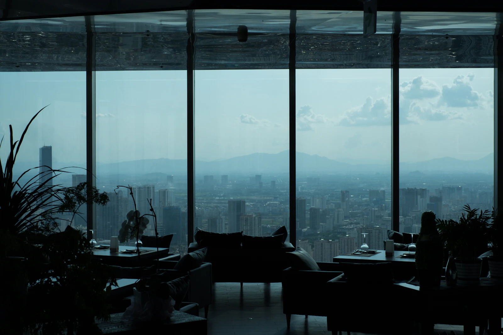
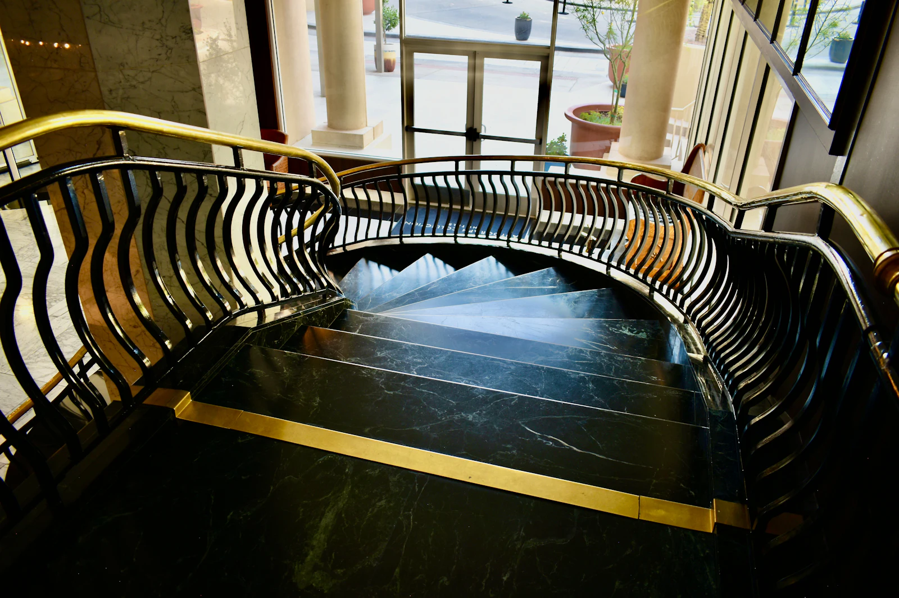
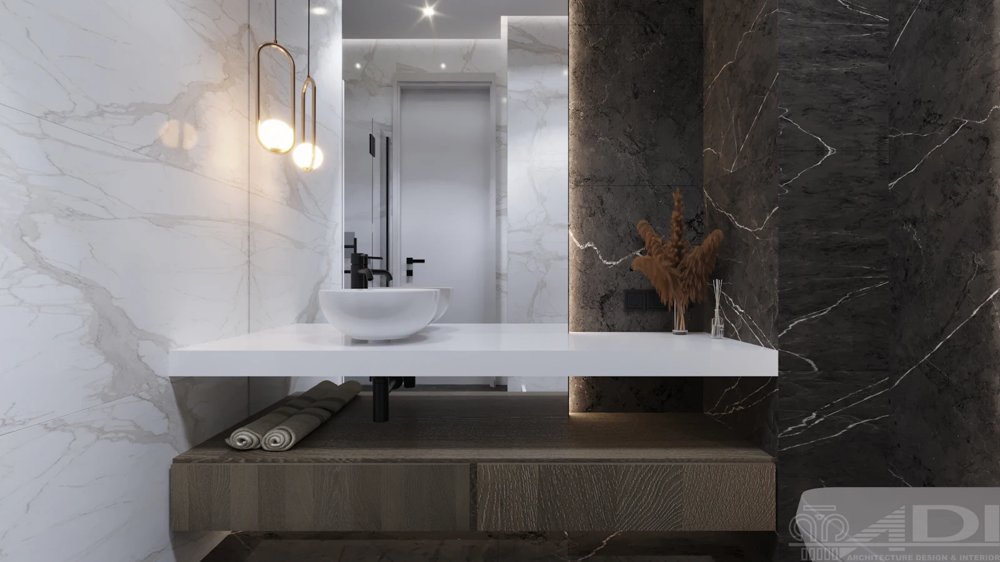

Площадь310 м²
Срок9 месяцев
СтильСовременная классика
ГдеМосква-Сити
Задача
Тёплый дом на высоте 240 метров
Панорамные окна от пола до потолка — главное достоинство и главная сложность этой квартиры: днём слишком светло, вечером город заглядывает внутрь.
Мы приглушили интерьер: графитовый текстиль, тёмный камень, подвесной камин в спальне. Шторы из бархата управляются по сценарию — вечером квартира сама становится уютнее.




«Раньше я заезжал сюда переночевать. Теперь не хочу уезжать.»Максим, владелец

Следующий проект